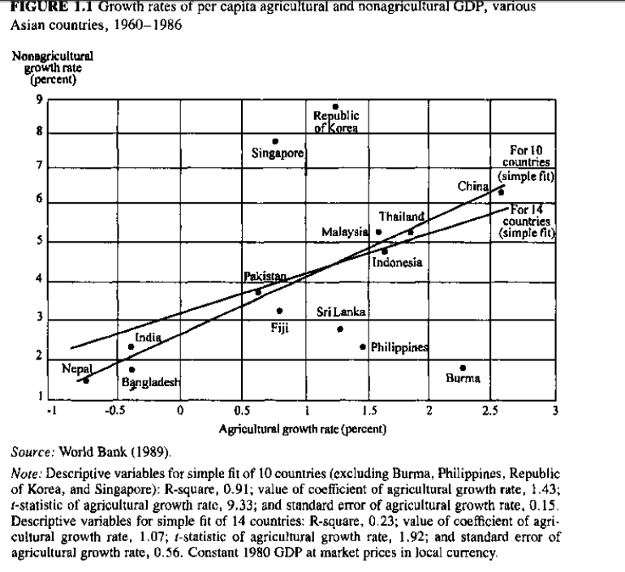
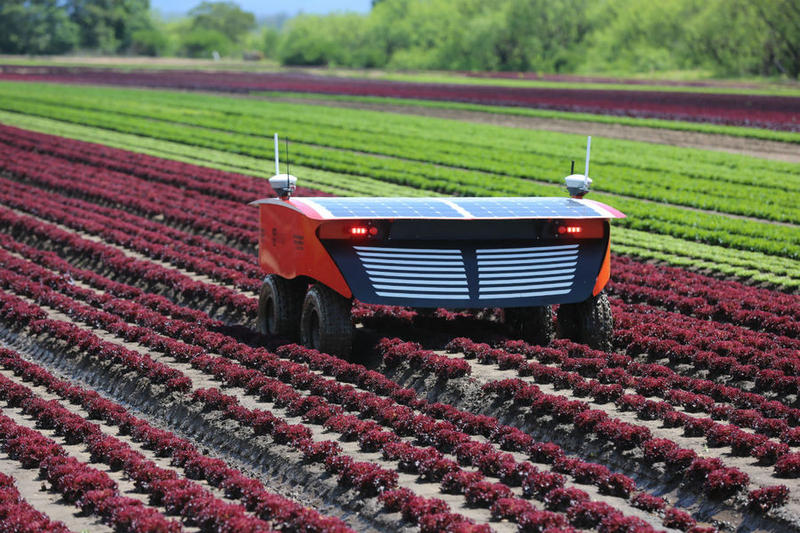

Agricultural Transformation and Rural Development
EC 390 - Development Economics
2025
Motivation
As of 2018, over 3 Billion people live in rural areas in developing countries and about 25% of them in extreme poverty
Why do we discuss agriculture so much?
- Many people in developing nations work in agriculture
- We would like to address subsitence economies
- There is a “somewhat” positive relationship between growth in agriculture and growth in GDP
Africa

Asia
Latin America

Motivation
Percent of people living in rural communities across the world:
- Sub-Saharan Africa 64%
- South Asia 69%
- India > 67%
- Ethiopia, Nepal, Nepal, Niger, Papua New Guinea, Rwanda, South Sudan, Sri Lanka, Uganda >80%
Over 2/3 of the world’s poor live in rural areas
- Where Income = Subsistence Agriculture
Agriculture
Farming Across the World
We can juxtapose farmers in the developing world to farmers in the US, to better understand the scale of the difference
Farmers in Developing Countries
- Very small farms Less than 10 acres (on average)
- Less farming technology
- Need to adapt to hotter and more humid climates
- Farmers supply food for themselves
Farmers in the US
- Farms are large 441 acres (on average)
- Farming technology is highly advanced
- Technology is well-aligned with local climates
- Farmers supply food for many people 144 people per farmer (on average)
Farming Across the World
Farming in Sri Lanka

Farming in the US

Malthusian Trap
Malthus (1789) argued that population growth would lead to mass shortages of food
- This is thought to describe how population growth tends to outpace the growth of resources
- This was called the “Malthusian Trap” or Malthusian Theory of Population
Malthusian Trap
Assumptions used for this argument:
- Population grows exponentially (1, 4, 9, 16,…)
- Diminishing returns to land, labor, capital, etc. means that resources grow linearly (1,2,3,4,…)
- There exists a limit to the amount of food that can be produced
- So there is a carrying capacity due to the food supply limit
Malthusian Trap

Malthusian Trap
The assumptions are relatively true, but still we don’t see any Malthusian Trap
Why is this?
Technological advancement
Green Revolution
Green Revolution \(\leftarrow\) I made it green
Boost in grain production associated with the scientific discovery of new hybrid-seed varieties of wheat, rice, and corn that resulted in high yields in many developing countries
Key Elements
- High-yield crop varieties
- Chemical fertilizers and pesticides
- Irrigation expansion
- Modern farming techniques
New Seeds
- Resistance to drought and pests
- Give higher yields


Agrarian Systems in Developing Countries
There are different agricultural practices in developing economies
We can think of three separate stages
1. Agriculture-based countries
2. Transforming countries
3. Urbanized countries
1. Agriculture-Based Countries
- About 417 Million people live here
- More than 66% of the poor in these countries live in rural areas
- Agriculture accounts for 32% of GDP growth (on average)
- Rely heavily on traditional agricultural practices
- “Slash-and-Burn” No Bueno
Slash-and-Burn
Rotating plots of land
Here is the process:
- Remove trees and vegetation
- Burn the area (increases nutrients in the soil)
- Plant crops directly into nutrient-rich ash
- Cultivate until plot becomes infertile
- Abandoment and fallow
Very old agricultural process and it is not very efficient if you are not moving around the world
- Also leads to deforestation and erosion
2. Transforming Countries
- Largest concentration of people living in a rural setting (2.2 Billion)
As the name implies, its a transition toward urbanization
- Rural poverty is high, but agriculture contributes about 7% to GDP growth
- Labor begins to move out of agriculture and into other sectors (manufacturing, services, and construction)
- Urbanization accelerates as people migrate to cities for jobs
- Potential for income growth
- Increased probability of income inequality
3. Urbanized Countries
- Half or more than the country’s poor live in cities
- Very few working people are in the agricultural sector
- Agriculture contributes even less to GDP growth
- Typically will find an industrial agricultural sector (US)
- Typically countries with large urban centers
- Technological innovation and human capital drive growth
Three Systems of Agriculture

Three Systems of Agriculture

Three Systems of Agriculture

Three Systems of Agriculture

Three Systems of Agriculture

Problems in Agricultural Development
As with everything, there are issues of inequality
- Here we are talking about inequality in land holdings (specially in LATAM)
- Huge farms employ many people
- However, land owners care more about maintaining market power than increasing output
- Medium sized farmers are rare
- Farms these size potentially have a better mix of capital and labor, are more productive, have lower transaction costs than larger farms
- Some very small farms
- These are household farms
- Because they are small, there are no economies of scale
Land GINI

Problems in Agricultural Development
Subdivision of land in Asia
- Pre-colonial Asian cultures prefer cooperation, sharing resources within villages
- Colonial institutions assigned property rights to land
- Most landlords live elsewhere, and rely on sharecroppers to produce agricultural goods
- Sharecroppers: Renter farmers, which kickback a percentage of the crops in exchange for lease of the land
- Land is scarce, so rents are high
- At the same time, labor is abundance, so wages are low
Problems in Agricultural Development
Subsistence farming in Africa
- Most farming takes place on small plots to produce for one family
- Three main reasons for this persistence:
- Most farming is done by individuals using traditional tools
- Farming usually involves shifting cultivation once land nutrients have been used
- Leads to inefficencies since individuals must wait for nutrients to replenish
- This causes large swings in employment
- During farming times, labor is scarce
- During non-farming times, labor is in excess
- It is hard to sustain populations with the amount of food grown in these economies
Microeconomics of Farming
Microeconomics of Farming
Classical Theory has two factor models of production where capital is fixed, but labor is variable
- Households can adjust how much they work on their farm, but not what tools they use
- Gives rationale for low productivity
- Does not explain why small farm owners are resistant to technological innovation
- Theory says they will choose the method of production that gives the lowest cost
- Also implies perfect knowledge of types of technology, needed inputs, the weather, etc.
Microeconomics of Farming
The problem is that classical theory of agricultural production does not consider farmer’s uncertainty
Which would you prefer?
10 dollars with certainty
50% chance of getting 30 dollars and 50% chance of paying 10 dollars
- Both have the same expected payoff
- But the first has more consistent outcomes
- People tend to be risk-averse
- Do not like uncertaincty/variance in their outcomes
Microeconomics of Farming
Take the following farming techniques
Technique A
- Offers a lower average yield
- Low variance
Technique B
- Offers a higher average yield
- Higher variance
Suppose you need a consistent food supply, which technique will leave you starving more often?

Risk-averse farmers will tend to choose the safe option rather than gamble on a new method
Microeconomics of Farming
But we are leaving potential higher yields on the table
- Crop insurance helps with this problem
- This can be an actual insurance policy
- This would mean that farmers get paid when they have low yield
- Alternatively, diversification of crops can work as insurance
- Farmers would still have some y ield even if one crop does not work out
- The goal is to allow farmers to take risks
Microeconomics of Farming
Let’s do math
- Consider my crop yield is \(X\) and my neighbor’s is \(Y\)
- If I rely on my own crops, I get \(E[X]\) on average with a variance of \(Var(X)\)
- If my neighbor and I share our yields we each get:
\[ \dfrac{E[X] + E[Y]}{2} \]
on average with a variance of
\[ Var\left(\dfrac{X + Y}{2}\right) = 0.25 * Var(X) + 0.25 * Var(Y) + 0.5 * Cov(X,Y) \]
\[ \text{We can get this from:} \; Var(aX + bY) = a^{2}Var(X) + b^{2}Var(Y) + 2ab Cov(X,Y) \]
Covariance
\[ Var\left(\dfrac{X + Y}{2}\right) = 0.25 * Var(X) + 0.25 * Var(Y) + 0.5 * Cov(X,Y) \]
- The last term in the equation is very important
- Covariance is a measure of joint variability
- When variables behave similarly, we call that positive covariance
- When variables behave dissimilarly, we call that negative covariance
- An example is the daily temperature and how sunny it is
- We should suspect that when it is sunny, the temperature is also high
- This would lead us to think that the sun and temperature have a positive covariance
Covariance in our Farming Example
\[ Var\left(\dfrac{X + Y}{2}\right) = 0.25 * Var(X) + 0.25 * Var(Y) + 0.5 * Cov(X,Y) \]
Imagine you and your neighbor are growing crops
- You share a common goal: to produce a high amount of consistent food
- What should you and your neighbor do to accomplish this?
- Grow crops that have a negative covariance
- This would be a form of insurance (informal insurance)
Consumption Smoothing
Definition: Maintaining a consistent level of consumption over time
- Why might the goal be to maintain a consistent level of consumption?
- We prefer to maintain a stable standard of living over time
- How do we consumption smooth?
- Savings accounts, social security, insurance, etc.
- If a farmer has a really bad year, insurance kicks in and helps maintain consumption levels
- But in many developing countries, saving is difficult and there is no formal insurance
- What can individuals do?
Sharecropping
Sharecropping
Definition: A form of agriculture in which a landowner allows a tenant to use the land in return for a share of the crops produced on their portion of land
- Popular form of agriculture in many parts of the world
- Risk-aversion helps explain why we observe it so frequently, even though it is inefficient
- To understand why, we need to think about the incentives of the farmer and landlord
Sharecropping
Let’s recall some microecon terms
1. Maringal Product of Labor (MPL)
2. Value of Marginal Product of Labor (VMPL)
3. Opportunity Cost
Sharecropping
Let’s recall some microecon terms
1. Maringal Product of Labor (MPL)
- The change in output resulting from one more unit of labor
- Example: The change in rice yield resulting from working one more hour on your farm
2. Value of Marginal Product of Labor (VMPL)
3. Opportunity Cost
Sharecropping
Let’s recall some microecon terms
1. Maringal Product of Labor (MPL)
2. Value of Marginal Product of Labor (VMPL)
- How much the output from an additional unit of labor is worth
- Wage is one way to think about VMPL
3. Opportunity Cost
Sharecropping
Let’s recall some microecon terms
1. Maringal Product of Labor (MPL)
2. Value of Marginal Product of Labor (VMPL)
3. Opportunity Cost
- The value of the next best alternative
- The opportunity cost of being in college is (in part) the wage you could be earning if you were working
Optimal Labor
If a farmer is working on their own plot of land, they will decide the optimal amount of hours to work
But how?
- By finding where marginal product of labor equals the value of the next best alternative Why?
- If \(VPML < \text{Opportunity Cost}\), then the farmer should stop working and do something else
- If \(VPML > \text{Opportunity Cost}\), then the farmer should work more and dedicate themselves to this work
- Because of this, there is clearly one optimal labor amount
EC390, Lecture 06 | Ag. and Rural Dev